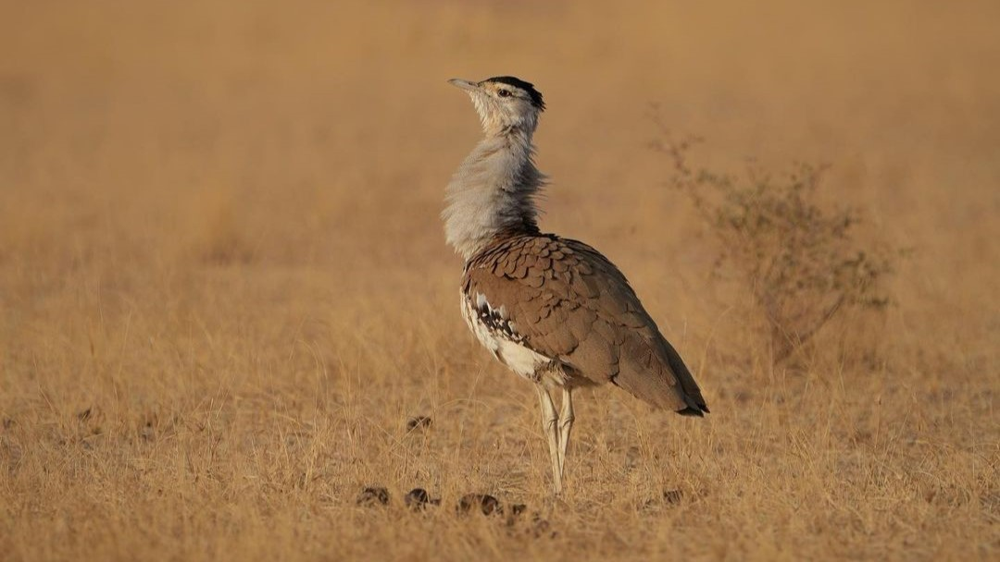
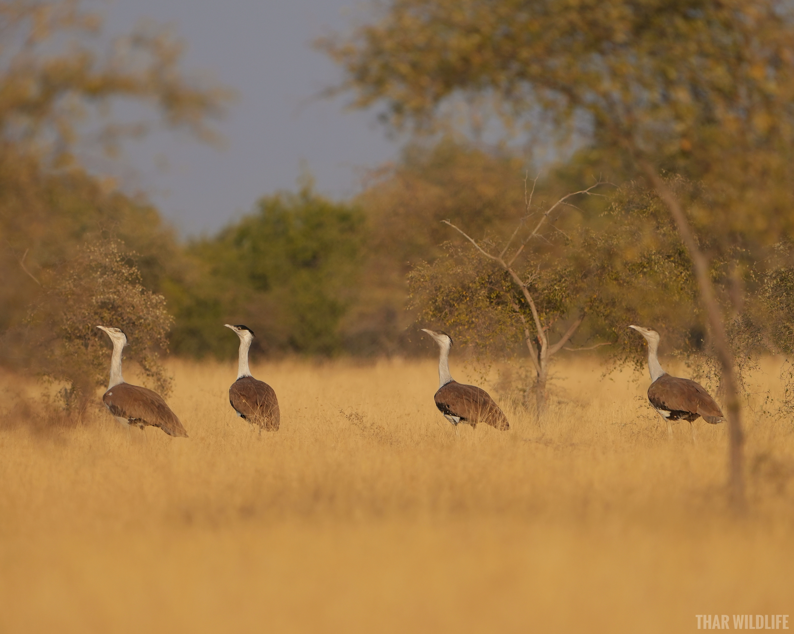
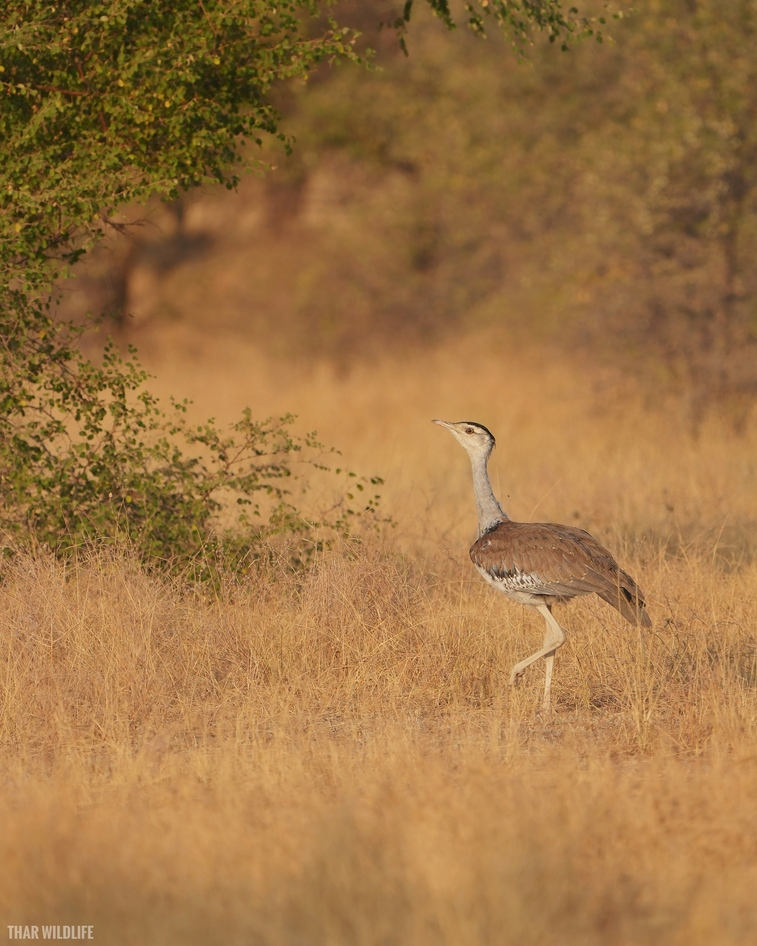
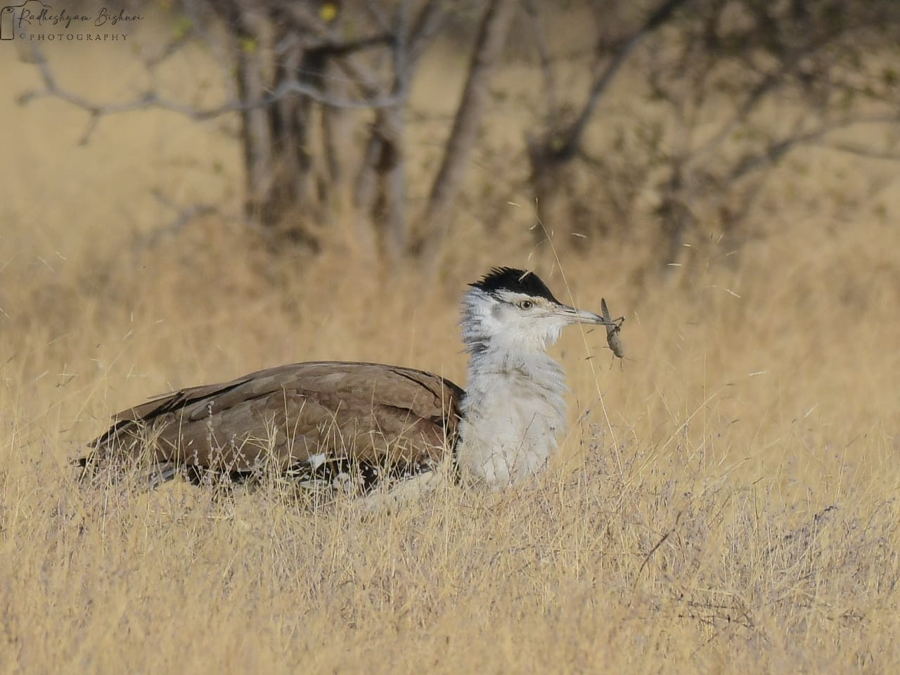
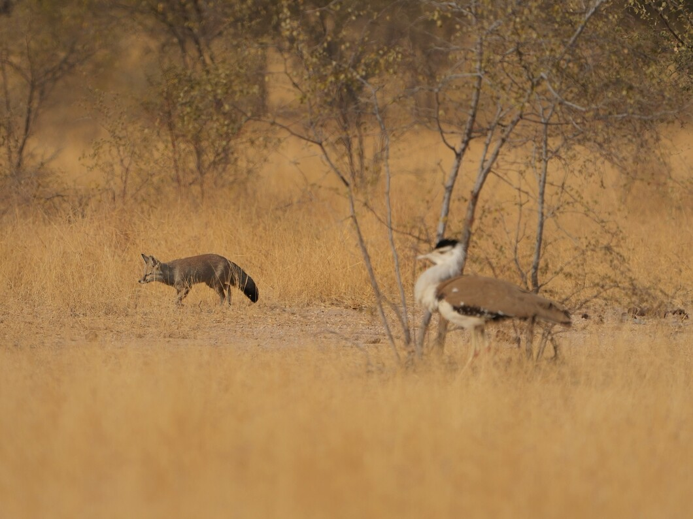
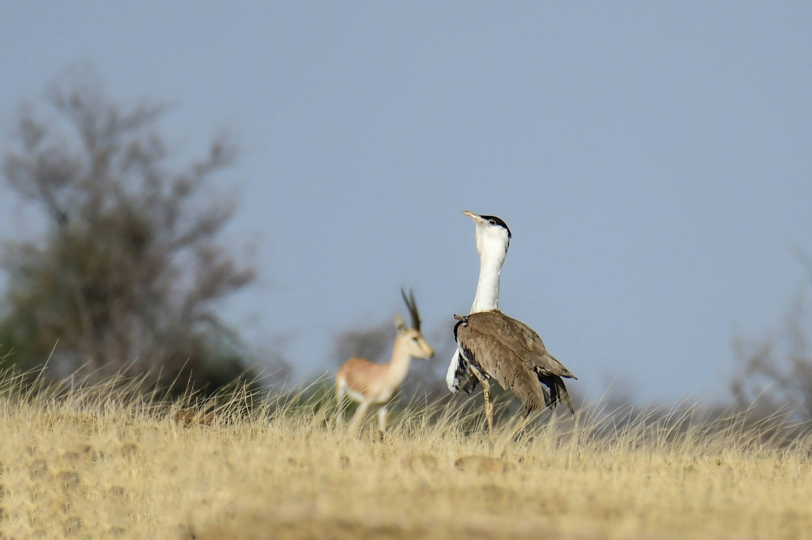
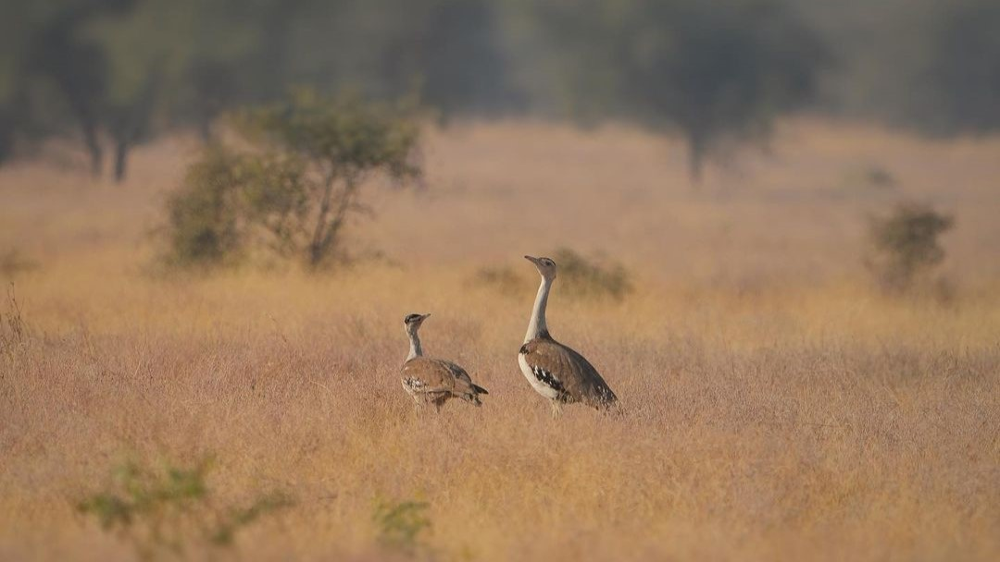
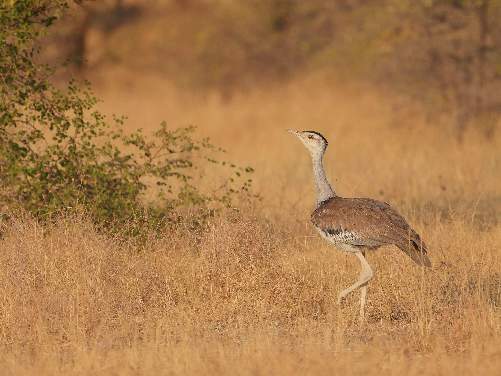
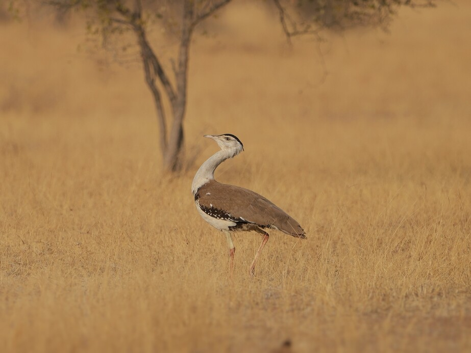
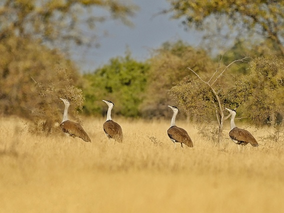

The Godawan is a symbol of India's rich biodiversity and a flagship species for conservation.
The Great Indian Bustard (GIB) , locally known as the Godawan, is a large ground bird
with a height of about one metre and magnificent and critically endangered bird species that once
gracefully roamed the vast landscapes of India. This majestic bird, possesses striking features, with
a brown and white plumage that seamlessly blends with its natural habitat, making it a true master of
camouflage.



1. Critical Endangerment:
The Great Indian Bustard (GIB) is critically endangered, with only a few hundred individuals remaining in
the wild. This alarming decline is mainly due to habitat loss, as the grasslands they rely on are
converted into agricultural lands and urban areas. Conservation efforts are crucial to prevent their
extinction.
Despite their majestic presence, GIBs have suffered dramatic population declines over the years. In the
1960s, there were over 1,500 individuals, but today, they teeter on the brink of extinction. The urgency
to save this species cannot be overstated.
2. Habitat Loss:
GIBs depend on expansive grasslands for their survival. However, extensive habitat loss has drastically
reduced their available range. Protecting and restoring their natural habitat is vital for their long-term
survival.
The conversion of grasslands into farmlands, infrastructure development, and urbanization has left GIBs
with limited areas to forage and breed. Conserving these grasslands is not only essential for the GIB but
also for numerous other species that depend on this unique ecosystem.
3. Poaching and Predation:
GIBs face threats from poaching for their feathers and body parts, as well as predation by feral dogs.
These factors contribute to their declining population and must be addressed through stringent
anti-poaching measures.
Poaching for their striking plumes, which are unfortunately sought after in the black market, remains a
significant threat. Additionally, the encroachment of feral dogs into their habitats poses a grave danger
to their nests and chicks.
4. Collision with Power Lines:
Collisions with high-tension power lines are a significant cause of GIB mortality. Efforts to mitigate
this threat include the installation of bird diverters and the undergrounding of power lines in critical
areas.
The GIB's flight patterns often lead them perilously close to these power lines, resulting in fatal
collisions. Conservationists and authorities are working together to make these landscapes safer for the
birds.
5. Conservation Initiatives:
Various governmental and non-governmental organizations, including Radheshyam Pemani Bishnoi, have
launched conservation initiatives aimed at protecting the GIB. These efforts involve habitat restoration,
community engagement, and raising awareness about the bird's plight.
Collaborative projects are underway to safeguard the GIB's future. These initiatives encompass not only
habitat preservation but also research, captive breeding programs, and community education to foster
coexistence.
6. Importance as a Flagship Species:
The GIB serves as a flagship species for conservation in India, drawing attention to the need for
preserving the unique biodiversity of the region. Its survival is indicative of the overall health of
grassland ecosystems.
Protecting the GIB goes beyond safeguarding a single species. It symbolizes our commitment to preserving
the entire ecosystem, including the countless other plants and animals that call these grasslands home.
7. Role in Ecosystem:
GIBs play a crucial role in maintaining the balance of grassland ecosystems. They help control insect
populations, disperse seeds, and contribute to the overall health of these habitats.
As omnivores, GIBs are key players in maintaining the delicate balance of their ecosystems. By controlling
insect populations and aiding in seed dispersal, they actively contribute to the vitality of these unique
habitats.
8. Global Significance:
The conservation of GIBs is not only important for India but also holds global significance. It reflects
our commitment to preserving endangered species and the ecosystems they inhabit.
The GIB's conservation resonates with the broader global effort to protect endangered species and conserve
threatened ecosystems. Their survival is a testament to our collective responsibility towards the planet's
biodiversity.
9. Awards and Recognition:
Radheshyam Pemani Bishnoi's dedication to GIB conservation has earned him recognition and awards from
prestigious organizations. His efforts inspire others to join the cause.
Radhe's tireless work and commitment to GIB conservation have not gone unnoticed. He has received
accolades and awards that highlight the importance of his efforts in the field of wildlife preservation.
10. Call for Urgent Action:
The precarious status of the GIB calls for immediate and sustained conservation action. Collaborative
efforts, along with increased public awareness, are essential to secure the future of this magnificent
bird species.
The time for action is now. The fate of the GIB rests in our hands, and it's a responsibility we all
share. Through collective efforts and a renewed commitment to conservation, we can ensure that this iconic
bird continues to grace our grasslands for generations to come.







Brief about GIB
Common Name
Great Indian Bustard
Local Name
Godawan
Scientific Name
Ardeotis nigriceps
Family
Otididae
Other Names
Godawan, GIB
Size
Adults: 90 to 120 cm (height), Wingspan: 210 to 250 cm
Habitat
Grasslands, savannas, dry plains
Distribution
Once widespread in India, now restricted to small populations in Rajasthan, Gujarat, Maharashtra,
Andhra Pradesh, and Karnataka
Main Threats
Habitat loss, poaching, power line collisions, and disturbance
Primary Diet
Seeds, insects, small rodents, and reptiles
Reproduction
Monogamous pairs, solitary nesting in tall grass
Lifespan
Up to 15 years
Importance
Indicator species for grassland ecosystems, crucial for maintaining ecological balance
Conservation Efforts
Habitat protection, community engagement, anti-poaching measures, captive breeding programs, and
research initiatives
Population Trends
Drastic decline from over 1,500 individuals in the 1960s to a few hundred today
Legal Protection
Protected under India's Wildlife Protection Act, 1972
Flagship Species
Symbolizes the conservation of India's unique biodiversity and grassland ecosystems
Call To Action
Ready For Unforgatable Travel. Remember Us!
"Prepared to Immerse in Unforgettable Thar Desert Exploration ? Let Your Journey Echo Our Warmth and
Expertise Forever."